En este experimento implementamos un autómata celular unidimensional compuesto por \(L=201\) celdas, cada una de las cuales puede encontrarse en uno de dos estados posibles, \(0\) o \(1\). Se utilizó una frontera periódica, de modo que la primera y la última celda se consideran vecinas. La vecindad tiene radio \(r=2\), por lo que para determinar el estado siguiente de una celda se consideran las dos celdas a su izquierda, la propia celda y las dos celdas a su derecha. De esta manera, cada actualización depende de una configuración de cinco celdas.
Regla
La evolución del autómata está determinada por una regla que se proporciona como parámetro del programa. Debido a que la vecindad tiene cinco celdas, existen \(2^5=32\) configuraciones posibles para cada vecindad. La regla asigna a cada una de estas configuraciones un estado de salida, \(0\) o \(1\). Siguiendo la idea de la numeración de reglas de Wolfram, estas asignaciones se representan mediante un número entero. En este caso, al utilizar radio \(r=2\), el número de reglas posibles es \(2^{32}\), por lo que las reglas van desde \(0\) hasta \(2^{32}-1\).
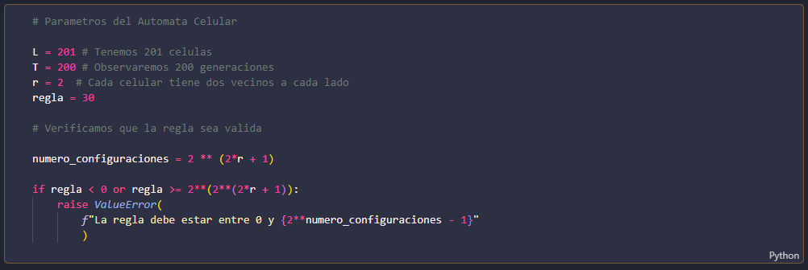
Construcción de una nueva generación
La función siguiente_generacion calcula el estado de todas las células en el siguiente instante de tiempo. Para cada posición se construye la configuración de cinco bits correspondiente a su vecindad. Esta configuración se transforma en un número entero, que permite identificar cuál de las 32 posibilidades se está utilizando. Después se consulta la representación binaria de la regla para determinar si la célula tomará el estado \(0\) o \(1\) en la siguiente generación.
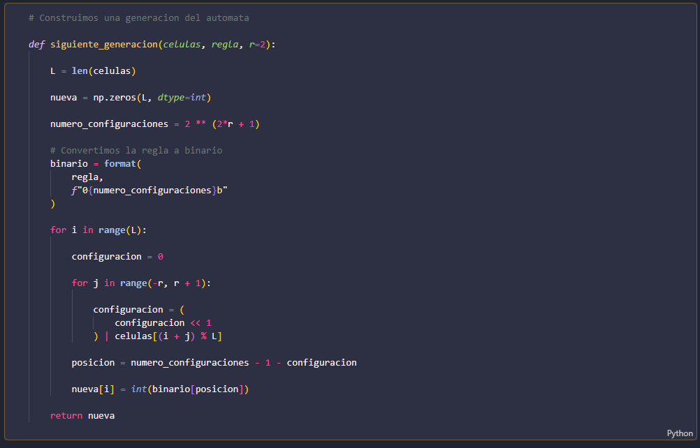
Para representar una frontera periódica se utiliza el operador módulo. De esta manera, cuando una célula se encuentra cerca de uno de los extremos del arreglo, las posiciones que quedarían fuera se identifican con las posiciones correspondientes del extremo contrario. En particular, la primera y la última célula se comportan como vecinas. Esto permite que la dinámica se desarrolle sobre un espacio cerrado sin introducir condiciones especiales en los bordes.
La simulación comienza con una única célula activa ubicada en el centro del sistema, mientras que todas las demás células se encuentran en el estado \(0\). Esta elección permite observar de manera clara cómo una perturbación localizada se propaga y genera estructuras a medida que transcurre el tiempo. Mantener la misma condición inicial al comparar distintas reglas permite atribuir las diferencias observadas principalmente a la regla de evolución.
Evolución espacio-temporal
La función automata_celular genera una matriz de dimensiones \(T\times L\), en la que cada fila representa una generación y cada columna corresponde a una posición espacial. La primera fila contiene la condición inicial y las filas siguientes se obtienen aplicando sucesivamente la regla de evolución. De esta manera, toda la historia del sistema queda almacenada en una única matriz de bits.
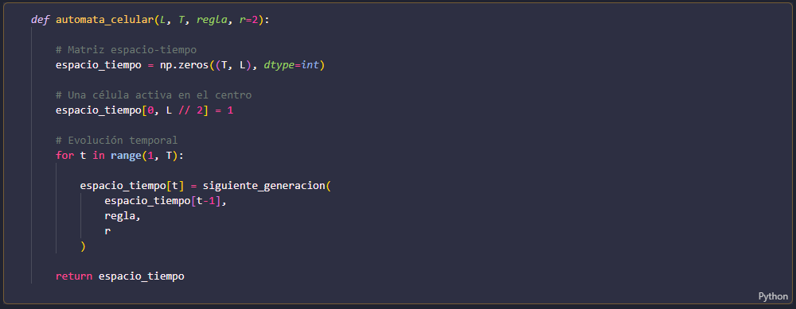
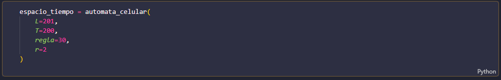
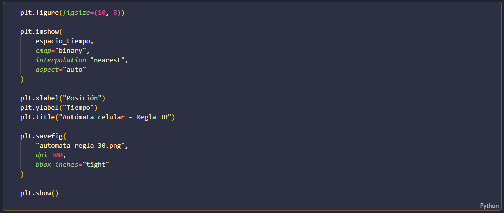
Exploración de diferentes reglas
Una vez construido el autómata, se prueban varias reglas utilizando exactamente los mismos parámetros y la misma condición inicial. Esto permite comparar visualmente los patrones producidos por cada regla. Algunas pueden generar estructuras relativamente ordenadas o repetitivas, mientras que otras pueden producir patrones más irregulares y complejos. La comparación permite estudiar cómo las reglas locales determinan el comportamiento global del sistema.

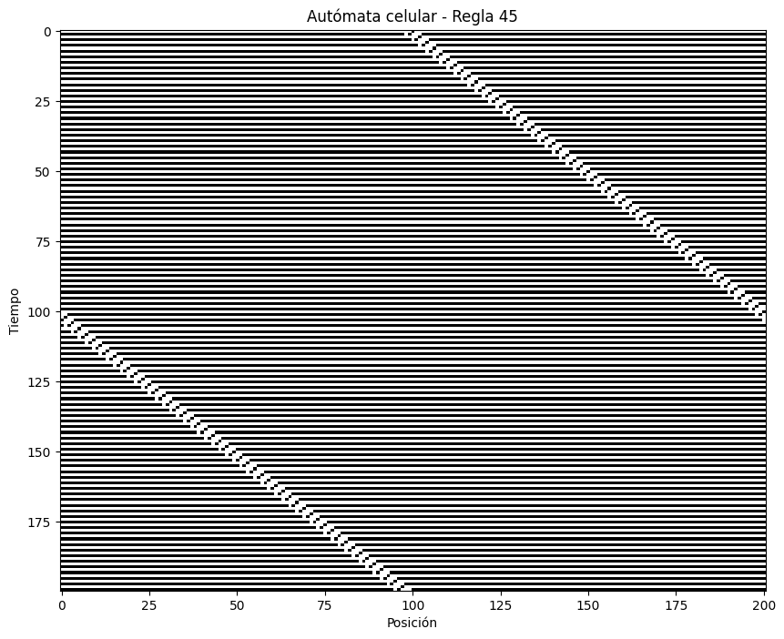
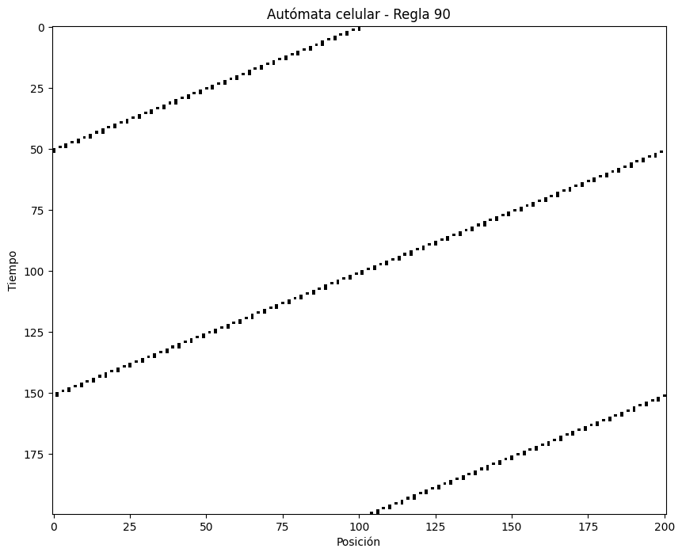
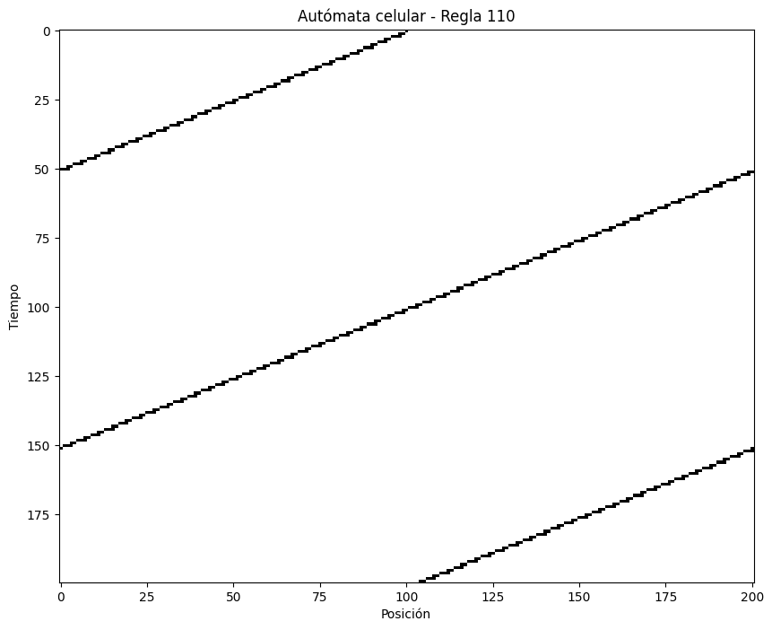
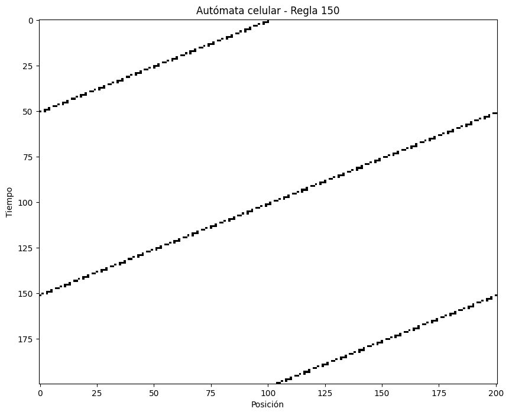
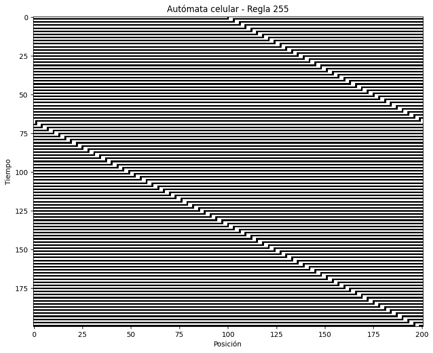
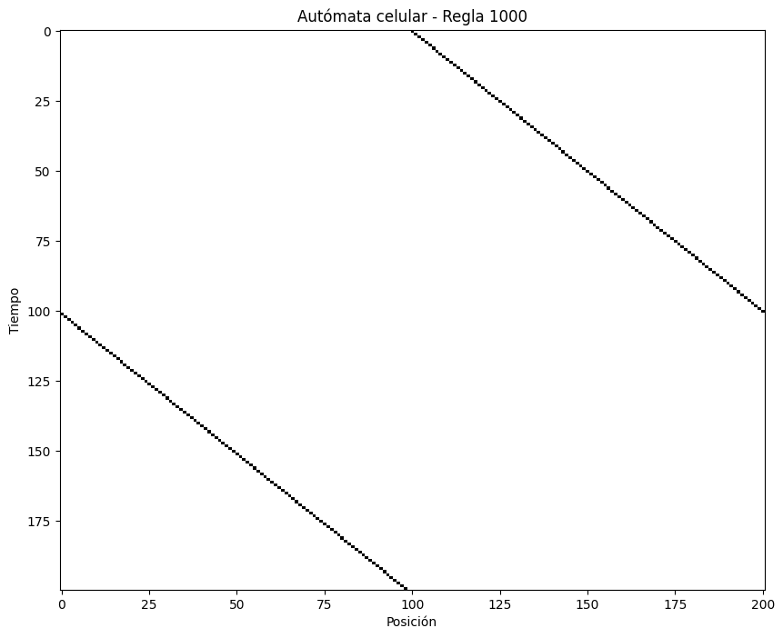
Al explorar las reglas \(30, 45, 90, 110, 150, 255, 1000\) y \(5000\), se observa una gran variedad en los patrones espacio-temporales obtenidos a partir de la misma condición inicial. Las reglas \(30, 90, 110\) y \(150\) generan estructuras bastante simples, caracterizadas principalmente por la propagación de actividad a través del espacio, con patrones que recuerdan líneas o diagonales. En estas reglas no se aprecia una irregularidad elevada, sino una evolución relativamente ordenada.
La regla \(45\) produce un patrón mucho más denso, en el que una gran parte de las celdas permanece activa. Aunque existe una estructura regular en la imagen, también aparecen desplazamientos y cambios en el patrón a medida que avanza el tiempo. La regla \(255\) presenta un comportamiento igualmente denso, pero con una estructura más uniforme. En ambos casos se observa que pequeñas modificaciones en la regla pueden cambiar considerablemente la cantidad de células activas y la forma global del patrón.
Por otro lado, las reglas \(1000\) y \(5000\) producen estructuras muy simples: a partir de la única célula activa inicial se generan únicamente algunas trayectorias diagonales y la cantidad de células activas se mantiene muy pequeña. Esto corresponde a un comportamiento altamente ordenado y con poca complejidad visual. En general, la comparación de estas reglas muestra que el número de la regla por sí solo no indica directamente el tipo de patrón que aparecerá; lo que determina la evolución es la asignación de estados a las distintas configuraciones de la vecindad.
En estas simulaciones no todas las reglas presentan periodicidad o aparente aleatoriedad de manera evidente. Algunas muestran repeticiones y estructuras regulares, mientras que otras generan patrones más densos o difíciles de describir mediante una forma simple. Esto permite observar cómo, a partir de una regla local y determinista, pueden surgir comportamientos globales con diferentes grados de orden y complejidad.
Espacio de fase completo
Para estudiar con mayor detalle la dinámica del autómata celular, se trabajó con un sistema pequeño de tamaño \(L=9\) y la regla 30. En este caso, existen \(2^9=512\) configuraciones posibles. Esto permite estudiar computacionalmente todo el espacio de estados, en lugar de observar únicamente la evolución a partir de una condición inicial particular.
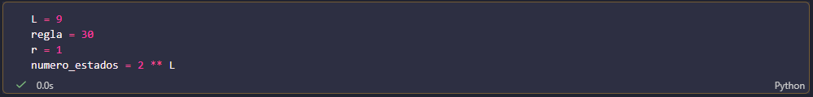
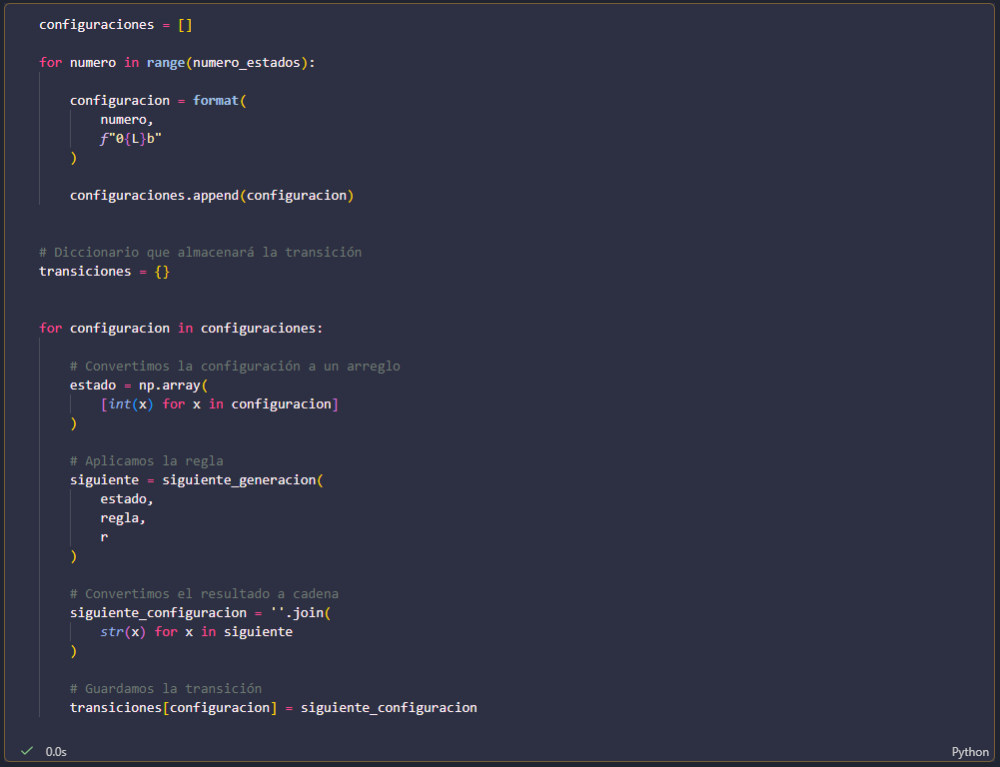
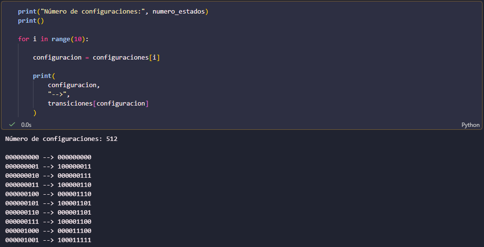
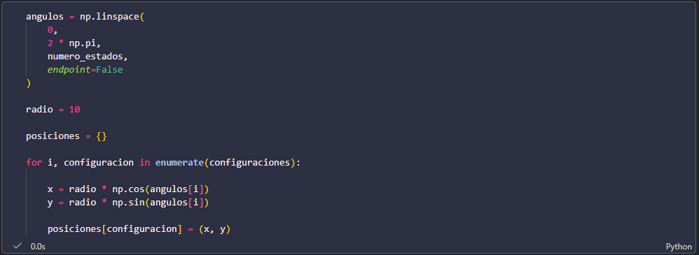
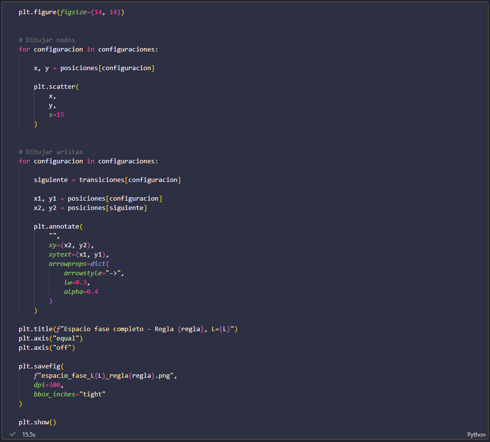
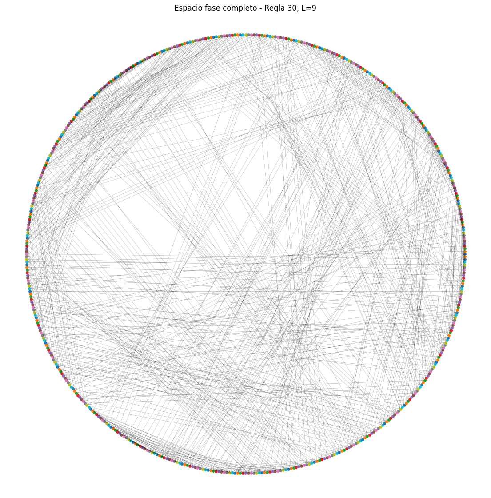
En el grafo de transición, cada configuración corresponde a un nodo. Si al aplicar la regla a una configuración \(c_i\) obtenemos \(c_j\), se agrega una arista dirigida \(c_i\longrightarrow c_j.\) Por lo tanto, el grafo representa completamente la dinámica del autómata: seguir una trayectoria en el grafo equivale a observar la evolución temporal de una configuración. Como cada estado tiene exactamente un estado siguiente, de cada nodo sale exactamente una arista.
La representación gráfica permite observar cómo se organizan las configuraciones dentro del espacio de fase. Algunas configuraciones pueden conducir a otras y, eventualmente, entrar en ciclos. Estos ciclos son especialmente importantes porque representan comportamientos que se repiten indefinidamente bajo la aplicación sucesiva de la regla.
Atractores y cuencas de atracción
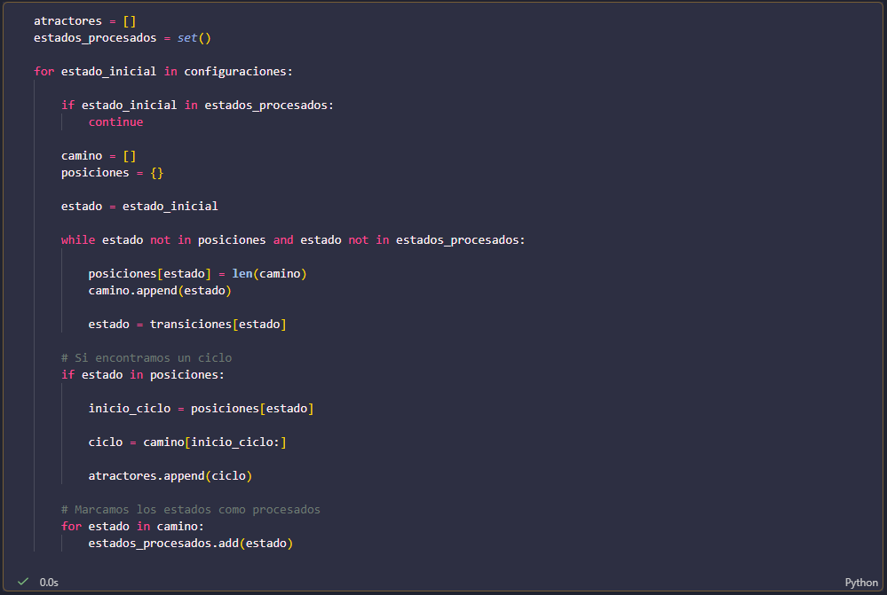
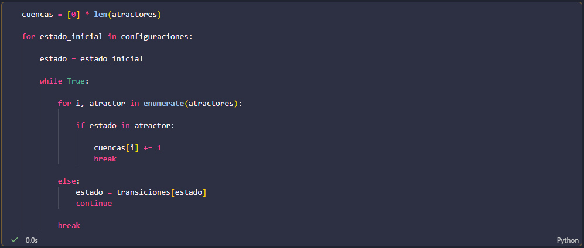
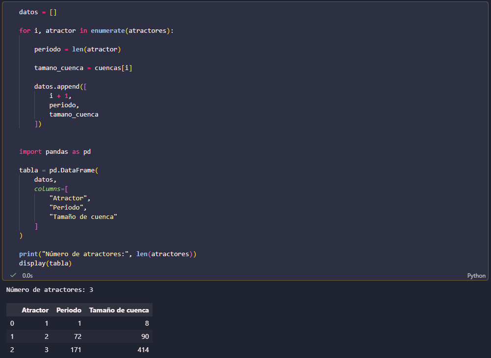
Una vez construido el grafo de transición, se pueden identificar los atractores del sistema. Un atractor es un ciclo de estados que se repite indefinidamente bajo la dinámica del autómata. Si tenemos \(c_1\longrightarrow c_2\longrightarrow\cdots \longrightarrow c_k\longrightarrow c_1,\) entonces estas \(k\) configuraciones forman un atractor.
El período de un atractor es precisamente el número de configuraciones distintas que contiene el ciclo. Así, un estado que satisface \(\Phi(c)=c\) es un atractor de período 1, mientras que un ciclo \(c_1\longrightarrow c_2\longrightarrow c_3\longrightarrow c_1 \) tiene período 3.
Para encontrar estos ciclos en el código se recorren las trayectorias generadas por la función \(\Phi\). Se mantiene un registro de los estados que ya aparecieron en la trayectoria. Cuando un estado vuelve a aparecer, significa que se ha encontrado un ciclo. Los estados comprendidos entre la primera aparición del estado repetido y su repetición constituyen el atractor.
Además del ciclo mismo, es importante determinar su cuenca de atracción. La cuenca de un atractor está formada por todas las configuraciones que, después de un número finito de iteraciones, llegan a alguno de los estados que forman dicho ciclo. Por ejemplo, si varias configuraciones tienen trayectorias como \(c_1\longrightarrow c_2\longrightarrow a_1\) y \(c_3\longrightarrow c_4\longrightarrow a_1,\) y \(a_1\) pertenece a un atractor, entonces \(c_1,c_2,c_3,c_4\) pertenecen a la cuenca de ese atractor.
El tamaño de la cuenca se obtiene recorriendo las 512 configuraciones iniciales y siguiendo la trayectoria de cada una hasta determinar a qué atractor llega. De esta manera, la tabla final resume la estructura dinámica del espacio de fase mediante tres cantidades: el número del atractor, su período y el número de configuraciones que pertenecen a su cuenca de atracción.
Finalmente, como todas las \(2^9=512\) configuraciones pertenecen a alguna trayectoria y cada trayectoria termina en un ciclo, la suma de los tamaños de las cuencas debe ser \[ \sum_i |\mathcal{B}_i|=512, \] donde \(\mathcal{B}_i\) representa la cuenca de atracción del atractor \(i\). Esto proporciona además una forma de verificar que el análisis del espacio de fase se realizó sobre todas las condiciones iniciales posibles.